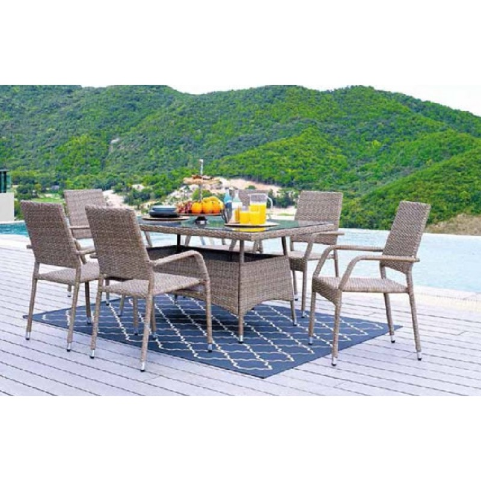

Svetainės komplektai | Baldai PL
 +370 68470444 info@baldaipl.lt Darbo laikas: I-V 9:00-18:00 Kontaktai Apie mus Pristatymas Taisyklės Baldai Visi Batų dėžės Čiužiniai Foteliai Kampai Kėdės Komodos Lentynos Lovos Miegamojo komplektai Prieškambario komplektai Rūbų kabyklos Sekcijos Sofos lovos Spintos Stalai Stalų ir kėdžių komplektai Virtuvės komplektai Staliukai Svetainė Komplektai Konsolės staliukai Kėdės Kolekcijos Komodos Lentynos Sekcijos Spintelės Spintos Stalai Staliukai TV staliukai Veidrodžiai Vitrinos Miegamasis Antčiužiniai, čiužinių užvalkalai Kolekcijos Tualetiniai staliukai Čiužiniai Komodos Komplektai Lovos Kontinentinės Lovos Lovų grotelės Naktiniai staliukai Spintos Veidrodžiai Vaikų kambarys Čiužiniai Kompiuterio Kėdės Vaikų kambario baldų komplektai Kolekcijos Komodos Lentynos Lovos Rašomieji stalai Spintelės Spintos Stalai ir staliukai Kėdės Vonia Vonios baldų kolekcijos Vonios Baldų Komplektai Pastatomos vonios spintelės Pakabinamos vonios spintelės Virtuvė Indaplovių durelės Komplektai Kriauklės virtuvei Medžiagos Stalviršiai Virtuvinės Sienelės Kolekcijos Baro kėdės Baro staliukai Spintelės Stalai Stalų ir kėdžių komplektai Kėdės Minkšti baldai Komplektai Pufai Foteliai Kampai Sofos lovos Biuro baldai Darbo , biuro kėdės Kolekcijos Rašomieji stalai Biuro stalai Prieškambaris Prieškambario baldų kolekcijos Prieškambario komplektai Prieškambario Spintos Suoliukai Batų dėžės Rūbų kabyklos Kontaktai Apie mus Pristatymas Taisyklės Nemokamaspristatymas Atsiskaitymas grynais
arba kortele Saugus
pirkimas Pirkimas
lizingu Prisijungti 0 | 0.00 €
Jūsų prekių krepšelis tuščias
0 | 0.00 € Baldai Visi Batų dėžės Čiužiniai Foteliai Kampai Kėdės Komodos Lentynos Lovos Miegamojo komplektai Prieškambario komplektai Rūbų kabyklos Sekcijos Sofos lovos Spintos Stalai Stalų ir kėdžių komplektai Virtuvės komplektai Staliukai Svetainė Komplektai Konsolės staliukai Kėdės Kolekcijos Komodos Lentynos Sekcijos Spintelės Spintos Stalai Staliukai TV staliukai Veidrodžiai Vitrinos Miegamasis Antčiužiniai, čiužinių užvalkalai Kolekcijos Tualetiniai staliukai Čiužiniai Komodos Komplektai Lovos Kontinentinės Lovos Lovų grotelės Naktiniai staliukai Spintos Veidrodžiai Vaikų kambarys Čiužiniai Kompiuterio Kėdės Vaikų kambario baldų komplektai Kolekcijos Komodos Lentynos Lovos Rašomieji stalai Spintelės Spintos Stalai ir staliukai Kėdės Vonia Vonios baldų kolekcijos Vonios Baldų Komplektai Pastatomos vonios spintelės Pakabinamos vonios spintelės Virtuvė Indaplovių durelės Komplektai Kriauklės virtuvei Medžiagos Stalviršiai Virtuvinės Sienelės Kolekcijos Baro kėdės Baro staliukai Spintelės Stalai Stalų ir kėdžių komplektai Kėdės Minkšti baldai Komplektai Pufai Foteliai Kampai Sofos lovos Biuro baldai Darbo , biuro kėdės Kolekcijos Rašomieji stalai Biuro stalai Prieškambaris Prieškambario baldų kolekcijos Prieškambario komplektai Prieškambario Spintos Suoliukai Batų dėžės Rūbų kabyklos Patarimai DUK Kambarių dizainas Naujienos Kontaktai Apie mus Pristatymas Taisyklės Prisijungti / Registruotis Visi Batų dėžės Čiužiniai Foteliai Kampai Kėdės Komodos Lentynos Lovos Miegamojo komplektai Prieškambario komplektai Rūbų kabyklos Sekcijos Sofos lovos Spintos Stalai Stalų ir kėdžių komplektai Virtuvės komplektai Staliukai Svetainė Komplektai Konsolės staliukai Kėdės Kolekcijos Komodos Lentynos Sekcijos Spintelės Spintos Stalai Staliukai TV staliukai Veidrodžiai Vitrinos Miegamasis Antčiužiniai, čiužinių užvalkalai Kolekcijos Tualetiniai staliukai Čiužiniai Komodos Komplektai Lovos Kontinentinės Lovos Lovų grotelės Naktiniai staliukai Spintos Veidrodžiai Vaikų kambarys Čiužiniai Kompiuterio Kėdės Vaikų kambario baldų komplektai Kolekcijos Komodos Lentynos Lovos Rašomieji stalai Spintelės Spintos Stalai ir staliukai Kėdės Vonia Vonios baldų kolekcijos Vonios Baldų Komplektai Pastatomos vonios spintelės Pakabinamos vonios spintelės Virtuvė Indaplovių durelės Komplektai Kriauklės virtuvei Medžiagos Stalviršiai Virtuvinės Sienelės Kolekcijos Baro kėdės Baro staliukai Spintelės Stalai Stalų ir kėdžių komplektai Kėdės Minkšti baldai Komplektai Pufai Foteliai Kampai Sofos lovos Biuro baldai Darbo , biuro kėdės Kolekcijos Rašomieji stalai Biuro stalai Prieškambaris Prieškambario baldų kolekcijos Prieškambario komplektai Prieškambario Spintos Suoliukai Batų dėžės Rūbų kabyklos Patarimai DUK Kambarių dizainas Naujienos Pradžia Baldai Svetainė Komplektai Filtrai Standartinė Pavadinimas (A - Z) Pavadinimas (Z - A) Kaina (Žema Aukšta) Kaina (Aukšta Žema) Įvertinimai (Aukščiausi) Įvertinimai (Žemiausi) Prekės kodas (A - Z) Prekės kodas (Z - A) Rūšiuoti pagal: 15 25 50 75 100 Rodyti: Pristatymo terminas, d.d. 20 Pristatymo terminas, d.d. AkcijaBAXTER Svetainės baldų komplektas 961
541.00 € 624.00 € | -13% Išmatavimai Plotis (cm): 331 Aukštis (cm): 196 Gylis (cm): 41 UžsakytiBAXTER Svetainės baldų komplektas 963
552.00 € 637.00 € | -13% Išmatavimai Plotis (cm): 369 Aukštis (cm): 196 Gylis (cm): 41 UžsakytiBAXTER Svetainės baldų komplektas 971
387.00 € 447.00 € | -13% Išmatavimai Plotis (cm): 273 Aukštis (cm): 196 Gylis (cm): 41 UžsakytiCAMPARI (CK90 + CWT60 + CRTV154 + P140 + CRT100 + 35) Svetainės baldų Komplektas
392.00 € 420.00 € | -7% Išmatavimai Plotis (cm): 304 Aukštis (cm): 205 Gylis (cm): 45 UžsakytiDOS Svetainės baldų komplektas
260.00 € 300.00 € | -13% Išmatavimai Plotis (cm): 208 Aukštis (cm): 165 Gylis (cm): 33 UžsakytiFrida Svetainės Baldų Komplektas
373.00 € 387.00 € | -4% UžsakytiGEORGIA Svetainės baldų komplektas
613.00 € 707.00 € | -13% Išmatavimai Plotis (cm): 365 Aukštis (cm): 205 Gylis (cm): 47 UžsakytiINDY Svetainės baldų komplektas + LED
421.00 € 486.00 € | -13% Išmatavimai Plotis (cm): 343 Aukštis (cm): 189 Gylis (cm): 40 UžsakytiJAZZ Svetainės Baldų komplektas 945
301.00 € 348.00 € | -14% Išmatavimai Plotis (cm): 295 Aukštis (cm): 188 Gylis (cm): 40 UžsakytiLOFT 1 Svetainės Baldų Komplektas
468.00 € UžsakytiLOFT 2 Svetainės Baldų Komplektas
585.00 € UžsakytiNEWADA svetainės baldų komplektas A be komodos
322.00 € UžsakytiNEWADA svetainės baldų komplektas B su komoda
424.00 € UžsakytiNORDI A (NWT53 + NWT90 +NRTV160 + P107) Svetainės baldų Komplektas
451.00 € 484.00 € | -7% UžsakytiNORDI B (NL107 + NKSZ160 + NWT53 + NRTV160 + P107 + NWT90) Svetainės baldų Komplektas
971.00 € Užsakyti 1 2 Pirmyn >Svetainės komplektai
Svetainė privalo būti jauki ir funkcionali: juk joje praleidžiame kone didžiausią savo laisvalaikio dalį. Centrinis ir svarbiausias kambario akcentas – baldai. Baldaipl.lt siūlomi svetainės baldų komplektai padės įsirengti tokį kambarį, kuriame norėsis leisti vakarus – tiek su šeimos nariais, tiek su svečiais.
Pirkti baldų komplektą – ekonomiška ir patogu
„Baldai PL“ svetainės baldai parduodami tiek po vieną, tiek komplektais. Pirkdami baldų rinkinį ne tik sutaupysite, bet ir lengvai susikursite stilingą interjerą. Tokiu būdu negaišite laiko skirtingų baldų kombinavimui – visos detalės komplektuose suderintos nepriekaištingai.
Asortimentas Baldaipl.lt – platus. Siūlome įsigyti ne tik minkštųjų baldų komplektą, bet ir daugiau prie jo derančių baldų, interjero detalių: kavos staliuką , komodą , pakabinamą lentyną ar netgi baldams skirtus LED šviestuvus. Tarpusavyje suderinti baldai kuria harmonijos ir stilingumo įspūdį, todėl investuoti būtent į tokį variantą – išties verta.
„Baldai PL“: stilingi ir patvarūs svetainės baldai
Svetainės baldų komplektai gaminami pagal vyraujančias dizaino tendencijas, todėl yra modernūs ir stilingi. Baldai skiriasi modeliais ir matmenimis, spalvomis ir tekstūromis. Galite rinktis visiškai baltus ar tamsiomis detalėmis dekoruotus, paviršiumi įvairių rūšių medieną primenančius baldus. Taigi, tinkamiausią variantą savo svetainės interjerui rasite lengvai.
Tačiau svarbu ne tik estetiškumas, bet ir praktiškumas. Atrenkame tokius gamintojus, kurie rūpinasi skirtingais baldų naudotojų poreikiais, gamina ergonomiškus, patvarius, lengvai prižiūrimus baldus. Dauguma baldų pagaminti iš medienos plaušų plokštės arba laminuotos medžio drožlių plokštės, kurios pasižymi ne tik ilgaamžiškumu, bet ir puikia kaina.
Svetainę įrengsite vos keliais mygtuko paspaudimais
Baldaipl.lt asortimentą sudaro tik kokybiški ir stilingi gaminiai. Apsipirkti čia labai paprasta ir patogu, nes:
Svetainės baldų komplektai užsakomi taupant laiką. Pirkdami internetu, išvengiate klaidžiojimo po daugybę parduotuvių, stovėjimo eilėse. Paslaugūs, profesionalūs specialistai konsultuoja tiek telefonu, tiek el. paštu ir yra pasiruošę padėti išsiaiškinti Jūsų poreikius, norus ir išsirinkti optimalų, labiausiai tinkantį sprendimą. Atsiskaityti galima tiek kortele, tiek grynaisiais pinigais, po prekių pristatymo. Taip pat galite pirkti išsimokėtinai. Baldai į namus visoje Lietuvoje pristatomi nemokamai. Baldai transportuojami itin atsargiai ir rūpestingai, o atsiradus pažeidimams reaguojama operatyviai.Svetainės baldų komplektai – tai galimybė pasirūpinti ir komfortu, ir patrauklia, jaukia atmosfera. Negaiškite laiko ir energijos bandydami suderinti baldus: tiesiog išsirinkite sau priimtiniausią variantą iš dizainerių sukomponuotų komplektų, o visu kitu bus pasirūpinta.
Kontaktai Apie mus Pristatymas Taisyklės Svetainės žemėlapis